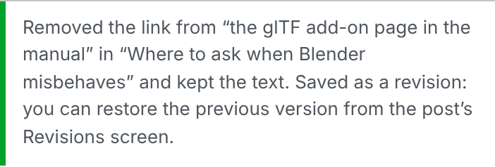

Linkrounds quick start
Installing Linkrounds, your first scan and your first fix, then Linkrounds Pro. Back to the Linkrounds product page; the measurements are on How we tested.
Install (WordPress 6.5 or newer, PHP 7.4 or newer)
- Download
linkrounds.zip. Do not unzip it. - In WordPress, open Plugins > Add New Plugin (the menu item and the button are called Add Plugin in WordPress 7.1), click Upload Plugin, choose the zip, then Install Now and Activate.
- After the first activation a green notice says "Linkrounds is under Tools > Linkrounds. Click Scan now." Click Open Linkrounds in it, or open Tools > Linkrounds yourself. The notice is shown once.
An administrator installs it; Editors can then scan, fix links and, with Pro, export the CSV. There is nothing to sign up for: no account, no key and no link limit.
First scan
- Click Scan now. Linkrounds reads your published posts, pages, public custom post types, synced patterns, the custom links in classic menus, and block-theme Navigation menus, and checks the links and images in them.
- The count climbs as links are checked ("20 of 63 links checked"), and so do the counts above the results. Pause and Resume are next to it. Each address is requested once per scan, however many posts use it, and links to your own posts, pages and uploads are checked against your own database and files, with no request to your site (what a scan costs your server).

wp-cron.php.
Reading the results
The product page explains the five answers: Broken, Looks broken, Redirected, Inconclusive and OK. Straight after your first scan Broken shows 0, and that does not mean nothing was found: a line above the results says how many addresses look broken (they failed once), and when Linkrounds checks them again by itself, for example "from 11:22 pm (in 40 minutes)". You do not need to scan again, and you can fix those links right away from Looks broken. The wait is 1 hour by default; you can choose 6 or 24 hours under Settings.
The line counts different addresses: one dead page linked from five posts is one address in five places ("71 different addresses look broken, used in 251 places"), and Show all 251 places lists every place, because each one is fixed in its own post.
![Tools > Linkrounds on our 300-post test archive straight after the first scan: 'Last scan finished November 18, 2026 4:33 am: 708 different addresses checked, used in 2,702 places.', then '71 different addresses look broken, used in 251 places. They failed once and are checked again by themselves from November 18, 2026 5:30 am (in 56 minutes). Each becomes Broken only if it fails again. You can fix them now. Show all 251 places', the tabs All (2,702), Broken (0), Looks broken (251), Redirected (49), Inconclusive (0), OK (2,402), Ignored (0), and the first rows: php.net manual pages with a yellow Looks broken badge, 404 and 'Page not found (404). Second check due after 5:30 am.'](img/first-scan-archive-phone.png)
Each row shows the page the link is on (with Edit and View), the full address, the link text, the status code, the reason and when it was last checked. Filter by answer or post type, search by address, and use Re-check now on any row.
Fix a link, and undo it
- Hover a row. Choose Edit address, type the new address and click Save; or choose Unlink to remove the link and keep its words.
- The message says what changed. Only that link in that post changes, and an edited address is checked straight away. A File block links to its file twice (the name and the Download button); Edit address on either row changes both, and the message says so.
- To undo, open the post, then Revisions, and restore the version before the change. The old link comes back as a new link, so it waits for its second check again before it is called Broken.


To fix several links at once, tick their rows, pick Unlink or Edit address under Bulk actions and click Apply. Only the rows you ticked change, and the message says what was done (or that nothing was changed). The same dead address in several posts is one row per place: search for it, tick the rows and change them all in one go. Menu items have no revisions in WordPress; the message after a menu fix says so, and you undo it under Appearance > Menus.
Exclusions and re-checks
- Settings > Excluded addresses: one per line.
example.comalso covers its subdomains;*is a wildcard, as in*.example.comorexample.com/members/*. - Untick post types, synced patterns or menu links you do not want scanned.
- Ignore on a row hides that one link; the Ignored filter lists it and undoes it.
- Broken and Inconclusive links are re-checked every day, and saving a post re-checks its links, so a link you fix in the editor leaves the list without a new scan.

Linkrounds Pro
- Install and activate the free plugin first (above). Pro is an add-on and does nothing without it. Once Pro and the free plugin are both active, a green notice says Pro is on and links to the Schedule & email tab, once.
- Install
linkrounds-pro.zipthe same way: Plugins > Add New Plugin > Upload Plugin, Install Now, Activate. - Open Tools > Linkrounds > Schedule & email. Choose daily, weekly or monthly and the hour (in the time zone set under Settings > General), add the addresses that should get the report, one per line, and save.
- Click Send a test email. Until you click Save schedule, the line beside "Next scheduled scan" says "Not saved yet: click Save schedule.". The message at the top says straight away whether WordPress could send it, and if not, WordPress's own reason (for example "Could not instantiate mail function."). If WordPress sent it but it does not arrive, look in spam, then ask your host about outgoing mail.
- On the Results tab, Export CSV, beside the Filter button, downloads the rows of the current filter, all pages. Menu links are listed as "Menu: name", with the menu editor as the edit link.
![The Plugins screen right after Linkrounds Pro was activated on a site without the free plugin: a yellow notice 'Linkrounds Pro is waiting for the free plugin: install “Linkrounds – Broken Link Checker” first. Pro is an add-on and does nothing on its own. The free plugin is a separate download: 1. Download linkrounds.zip (free) from ochrestack.com/linkrounds. 2. Upload it under Plugins > Add Plugin > Upload Plugin, click Install Now, then Activate Plugin. Linkrounds Pro starts working as soon as the free plugin is active. You do not need to install Pro again, and your Pro settings are kept.'](img/pro-first-phone.png)
The email report is sent after each scheduled scan, once the links that failed have had their second check, through your site's own mail setup. It lists each address that broke since the last report once, with why it failed and every page it is on ("Used in 3 places:"), and ends with a link to the Broken view. Its subject counts addresses, and places when there are more: "[Your site] Linkrounds: 10 addresses broke since the last report (used in 24 places)". The first report lists everything that is broken at that time. Many hosts need an SMTP plugin before WordPress can send mail; the test email tells you. If your site's mail setup ever refuses a report, the Schedule & email tab shows when and WordPress's reason, a line above the results points to it, and the links it would have listed go into the next report.
![The Schedule & email tab on a site that cannot send mail: Scheduled full scan Daily at 05:00, 'Next scheduled scan: November 19, 2026 5:00 am', the address studio@lowpolylane.test, 'No report sent yet.', and a red box: 'The last report could not be sent (November 18, 2026 5:00 am). Your site’s mail setup refused it. WordPress said: “Could not instantiate mail function.” No email went out; the links it would have listed will be in the next report. Many hosts need an SMTP plugin before WordPress can send mail. Fix that, then use Send a test email below.' Below it, 'Can this site send email?' and the Send a test email button](img/pro-report-failed-phone.png)
Limits
- Not checked in version 1: custom fields, page-builder data stored outside the post content, widgets, comments, theme options, excerpts, templates and template parts edited in the Site Editor,
srcsetimage sets, and video or embed addresses. If a builder keeps its links in the post content they are found, but editing inside a builder layout is not offered, and an Unlink inside a third-party builder block can leave that block needing repair. - WP-Cron runs when someone visits the site. On a quiet site, such as a staging or local copy, keep the Linkrounds screen open while it scans (closing it there stops the scan until the next visit), or set up a real cron job for
wp-cron.php. Pro's scheduled scans start on the first visit after the chosen hour. - A site that serves 404 to anything but a browser ends up Broken although readers see the page. Linkrounds says honestly that it is a link checker and does not pretend to be a browser. Open the link; if it works, Ignore it.
- A deleted page that forwards to its site's home page or to a search page is Redirected, not Broken; the reason says where it lands. A "not found" page at an ordinary address still reads as a working redirect, so look at the address it ends at.
- A server that never answers HEAD requests leaves its links Inconclusive ("no answer within 15 seconds"); they are never called Broken.
- A missing file in your uploads folder is checked on disk, so a redirect for an old upload address is not seen. Point the links at the new file with Edit address, or Ignore them.
- Menu items have no revisions in WordPress; the message after a menu fix says so, and you undo it under Appearance > Menus.
- No network-wide view on multisite; it works per site.
- Linkrounds never highlights or strikes through links on your site and adds no dashboard widget.
- "Maximum execution time of 30 seconds exceeded in …/Requests/src/Transport/Curl.php" in your debug log after publishing or importing many posts comes from WordPress's own pingbacks, not Linkrounds. Untick "Attempt to notify any blogs linked to from the post" under Settings > Discussion before a bulk import to avoid it.
Privacy: exactly what is sent
To check a link, Linkrounds sends a HEAD request from your server to the linked address (and a GET when HEAD does not succeed), with the User-Agent Mozilla/5.0 (compatible; Linkrounds/1.2.7; link check). This happens during a scan, on Re-check now, in the daily re-check, and when you save a post that contains links (from activation, even before the first scan). Addresses in private or local networks are never requested, except your own site's address (see what a scan costs your server). Nothing else is sent: no data about your site, your users or your content goes to Ochrestack or to any other service. There is no account, no telemetry and no update or licence check. Pro's email report and test email go only to the addresses you set, through your site's own mail setup (wp_mail()). Results stay in two tables in your own database and are removed when you delete the plugin.
Support
Both plugins' rows on the Plugins screen link this page (Documentation) and the support address. Email support@ochrestack.com with your WordPress and PHP versions, the Linkrounds version, and the address and reason shown on the row that puzzles you.